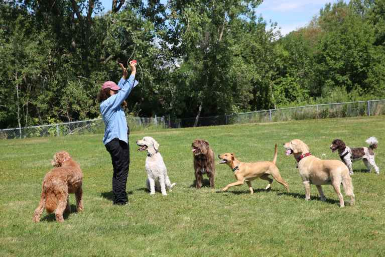
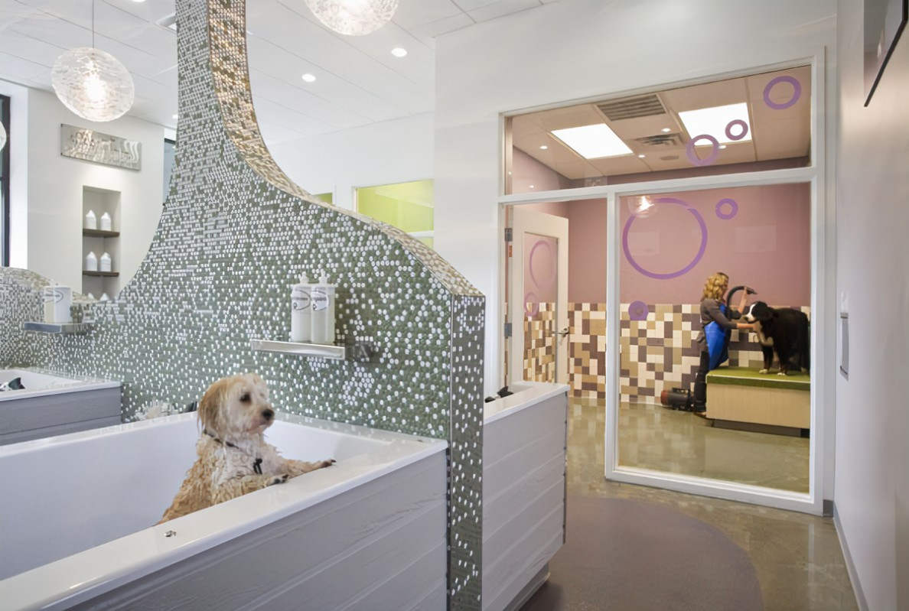
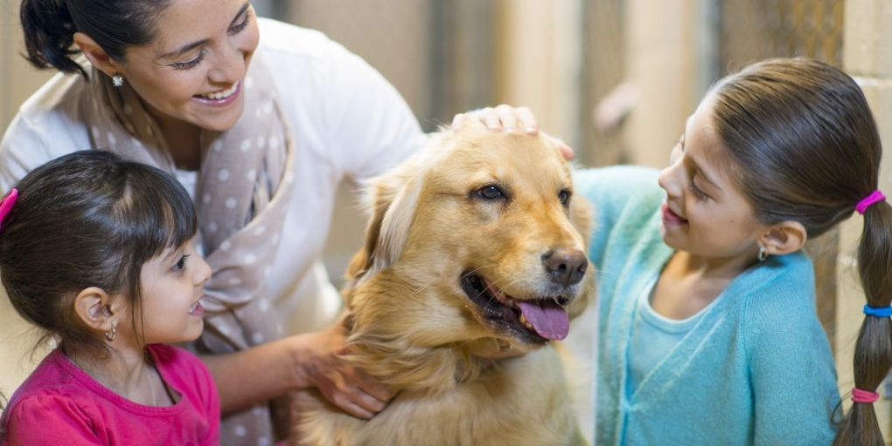
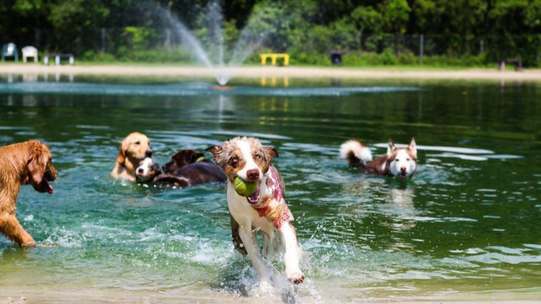
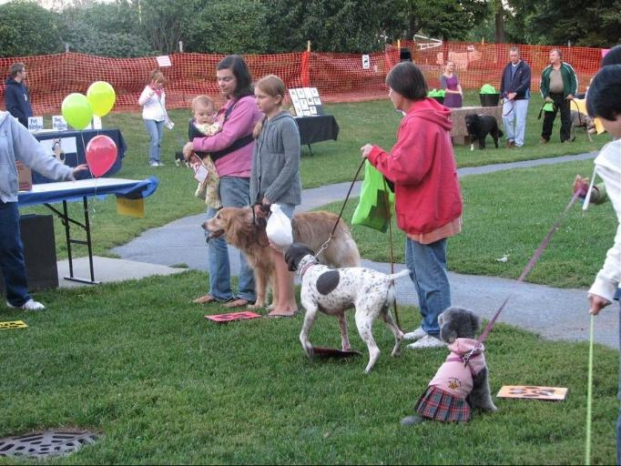

Annual Events
Discover our fun-filled annual events that bring so much joy and love to our fellow dogs and community. Learn about them below to understand how we bridge our communities together, and if any of these events catch your eye, note its date!
|  | Bark in the Park is a heartwarming annual event that transforms
our local park into a canine paradise. Shelter dogs, eager for love
and attention, are the stars of the day, as they join local volunteers
and dog enthusiasts in an open, green space filled with excitement.
The air is filled with the joyous sounds of dogs playing, tails wagging,
and laughter. Families and individuals from the community gather to
share their love and time with these deserving shelter dogs, creating
precious memories and forming connections. "Bark in the Park" not only
fosters community bonds but also shines a light on the adoptable pups
waiting for their forever homes. February 14th, 2024 |
|  | Senior Spa Day at our shelter is a dedicated event that pampers
our elderly canine residents. It offers them soothing grooming
sessions, gentle massages, and warm baths, enhancing their well-being.
This event focuses on their physical and emotional health while
providing a space for potential adopters to witness the unique
charm and companionship older dogs offer. It's a day of love,
care, and connection, emphasizing that senior dogs have plenty
of love left to give. December 8th, 2024 |
|  | Join us for our annual Dog Adoption Day , a heartwarming occasion
where we celebrate the wisdom and grace of our senior shelter
dogs. The Golden Years Gala is a special event that shines a
spotlight on these mature companions, ensuring they receive
the love and attention they truly deserve. Our senior dogs
enjoy relaxing grooming sessions, gentle massages, and warm
baths, all contributing to their overall well-being. This
day isn't just about pampering; it's about showcasing the
unique charm and unwavering companionship that older dogs
bring into our lives. The Golden Years Gala is a day of love,
care, and connection, a reminder that senior dogs have
boundless affection and devotion to offer, making them the
perfect additions to loving homes. Come and discover the
magic of senior dogs and find your lifelong furry friend.
January 27th, 2024 |
|  | Dive into a day of joy and splashes at our annual event,
Swim with Paws! This heartwarming occasion invites
volunteers and dog enthusiasts to bask in the sun while
sharing a refreshing pool experience with our shelter dogs.
Swim with Paws is all about creating unforgettable moments
for our furry friends as they paddle, play, and feel the
love and laughter in the water. It's a day of pure happiness,
where the sound of wagging tails harmonizes with the cheerful
laughter of our volunteers. This event not only offers a
fun-filled day under the sun but also provides these shelter
dogs with an opportunity to socialize, exercise, and build
confidence. Join us at Swim with Paws, a day of wet noses
and wagging tails, and be a part of the journey to find
forever homes for our amazing shelter dogs.
March 1st, 2024 |
|  | Step right up and be amazed by the Canine Carnival , a
spectacular event where humans and shelter dogs unite in
a grand celebration of skill and companionship! At this
annual gathering, people from all walks of life come
together to showcase their talents and teach our
eager-to-learn shelter dogs exciting tricks and commands.
The Canine Carnival is a lively and interactive experience
that offers a unique opportunity for these deserving canines
to shine. With laughter, applause, and wagging tails, the
event creates an atmosphere of shared joy and accomplishment.
It's a day where teamwork between humans and dogs takes
center stage, highlighting the incredible intelligence and
adaptability of our four-legged friends. Join us at the
Canine Carnival and be a part of a heartwarming journey
where the spotlight shines not only on the tricks but on
the incredible potential of shelter dogs to learn, bond,
and thrive.
August 19th, 2024 |